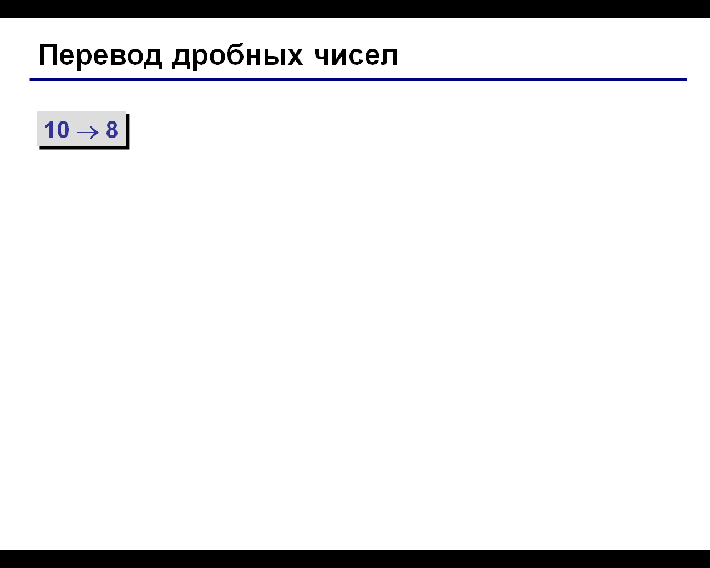

Арифметические основы работы компьютера
Системы счисления, решение задач
Цели
- Обобщить знания учащихся по теме: Системы счисления
- Разобрать приёмы перевода чисел из одной системы счисления в другую
- Формировать умения перевода числа из одной системы счисления в другую
Инструменты:
- ОС Windows
- Браузер
- Калькулятор
Задание 1. Оформите конспект используя навыки конспектирования (сокращая слова)
Для автоматизации работы с данными, относящимися к различным типам, важно унифицировать их форму представления. Для этого обычно используется прием кодирования, т. е. выражение данных одного типа через данные другого типа.
Любые данные для хранения и обработки компьютером представляются последовательностью двух целых чисел – единицы и нуля. Такая форма представления данных получила название двоичного кодирования.
Наибольшее применение при вводе, обработке
и выводе информации в компьютере и компьютерных системах нашли позиционные системы
счисления, при этом самыми распространенными являются десятичная, двоичная,
восьмеричная и шестнадцатеричная системы
Запишите определение:
Системой счисления называется совокупность правил записи любых чисел ограниченным количеством символов, называемых цифрами, позволяющая установить взаимно однозначное соответствие между любым числом и его представлением и наименованием.
Задание 2. Заполните таблицу соответствия чисел между разными системами счисления
|
||||||||||||||||||||||||||||||||||||||||||||||||||||||||||||||||||||||||||||||||||||||||||||||||||||||
|
Проверь
правильность заполнения таблицы
Перевод чисел из десятичной системы счисления Задание 3 Переведите в двоичную, восьмеричную и шестнадцатеричную СС целые и дробные числа (по вариантам) |
||||||||||||||||||||||||||||||||||||||||||||||||||||||||||||||||||||||||||||||||||||||||||||||||||||||
|
1 вариант номер по журналу 1, 4, 7, 10, 13, 16, 19, 22, 25, 28, 31, 34 2 вариант номер по журналу 2, 5, 8, 11, 14, 17, 20, 23, 26, 29, 32, 35 3 вариант номер по журналу 3, 6, 9, 12, 15, 18, 21, 24, 27, 30, 33, 36 |
|
1.1) В двоичную
Перевод целого числа из 10-ой С.С. в другие выполняется последовательным делением его на основание новой С.С. до тех пор, пока частное не станет меньше основания новой С.С. Число в новой С.С. записывается в виде последовательности остатков деления, начиная с последнего. |
|||
|
2.2) В восьмеричную 1 вариант 16510 2 вариант 18510 3 вариант 17510 |
|||
|
3.3) В шестнадцатеричную
1 вариант 16510 2 вариант 18510 3 вариант 17510 |
|||
|
4.4)В двоичную (точность 4 знака после запятой) 1 вариант 0,11510 2 вариант 0,18610 3 вариант 0,16510 Дробная часть переводится умножением на основание новой СС.После умножения целая часть результата ЗАПОМИНАЕТСЯ, а дробная – УМНОЖАЕТСЯ дальше. |
Умножение
производится до тех пор, пока дробная часть не станет равной нулю или
не будет достигнута заданная точность (в нашем случае
– 4 знака после запятой). |
||
|
5.5) В восьмеричную (точность 4 знака после запятой)
1 вариант 0,11510 2 вариант 0,18610 3 вариант 0,16510 |
Умножение
производится до тех пор, пока дробная часть не станет равной нулю или
не будет достигнута заданная точность (в нашем случае – 2
знака после запятой). |
 |
|
|
6.6) В шестнадцатеричную (точность 4 знака после запятой) 1 вариант 0,11510 2 вариант 0,18610 3 вариант 0,16510 |
Умножение
производится до тех пор, пока дробная часть не станет равной нулю или
не будет достигнута заданная точность (в нашем случае – 1
знак после запятой). |
Перевод чисел в десятичную систему счисления
Таблица степеней чисел 2, 8, 16
Для перевода числа из любой С.С. в 10-ую, его представляют в развернутом виде и считают результат.
Задание 4. Переведите числа в десятичную систему счисления
|
1.7) В десятичную
1 вариант 100101010.11112 2 вариант 11111010.01012 3 вариант
1000011011.012 |
||
|
2.8) В десятичную
1 вариант 555.58 2 вариант 641.38 3 вариант
252.58 |
||
|
3.9)
В
десятичную 1 вариант 1C1.316 2 вариант 2B3.516 3 вариант
3A1.216 |
||
Перевод чисел из восьмеричной и шестнадцатеричной в двоичную систему счисления и наоборот
Задание 5. Переведите числа из восьмеричной и шестнадцатеричной в двоичную систему счисления и наоборот
|
1.10) В двоичную
1 вариант 452.748 2 вариант 372.248 3 вариант
1033.28 |
Для перевода восьмеричного числа в двоичное необходимо каждую цифру заменить эквивалентной ей двоичной триадой. | |
|
2.11) В восьмеричную 1 вариант 100101010.11112 2 вариант 11111010.01012 3 вариант
1000011011.012 |
Для перевода двоичного
числа в восьмиричное, необходимо каждую цифру заменить эквивалентной ей двоичной триадой; - по три цифры справа налево от запятой и слева направо после запятой |
|
|
3.12) В двоичную
1 вариант 12A.F16 2 вариант 21B.416 3 вариант FA.516 |
Для перевода шестнадцатеричного числа в двоичное необходимо каждую цифру
заменить эквивалентной ей двоичной тетрадой. Дописав нули в конце ЧИСЛА или в начале, что бы получилось 4 цифры Еще один способ перевода. Смотреть видео. |
|
|
4.13) В шестнадцатиричную 1 вариант 10100100.11112 2 вариант 11000011.01112 3 вариант 11100100.11012 |
Чтобы
перевести число из
двоичной системы в шестнадцатеричную, его нужно разбить на тетрады
(четверки цифр), начиная с младшего разряда, в случае необходимости
дополнив старшую тетраду нулями, и каждую тетраду заменить
соответствующей шестнадцатиричной цифрой по четыре цифры справа налево от запятой и слева направо после запятой |
|
|
6.14) В восьмиричную 1 вариант A4E,5F 16 2 вариант C5A.D7 16 3 вариант 4F1.FB 16 5.15) В шестнадцатиричную 1 вариант 237.65 8 2 вариант 361.74 8 3 вариант 451.02 8 |
При переходе из восьмеричной системы счисления в шестнадцатеричную и обратно, необходим
промежуточный перевод чисел в двоичную систему. Числа при переводе буруться по три цифры, например 2 будет в двоичной системе счисления 010 |
Пример 1. Число перевести в восьмеричную систему счисления. Пример 2. Число перевести в шестнадцатеричную систему счисления.
|
135,568 перевести в A16
12D,56716 перевести в A8
Задание 7. Запишите домашнюю работу. Выполните задание. Покажите работу преподавателю.
- Число 1011101,101112 перевести в A8 , в A16
- Число 123,568 перевести в A2
- Число 1А1,1Е16 перевести в A2
- Число
432,5410 перевести
в A2,
в A8 ,
в A16.
В дробной части
оставить 5 знаков.;
- Переведите римские цифры в арабские:
- MMMD=
- XIX=
- MCMXCVI=
- Записать год своего рождения римскими цифрами.
- Выполнить действия, результат записать римскими цифрами:
- XXII-V=
- CV-LII=
- IC+XIX=
- XX/V=
- X*IV=
- XXIV*VII=
Задание 8
Номер вашего варианта должен соответствовать номеру вашего компьютера!
Для запуска теста: Откройте в проводнике папку 1_semestr\1_semestr\tema_4\ТЕСТ СС 16 вар
Перетащите файл тестовых вопросов на файл приложения MyTestStudent.exe

Запустите тест; 
При выполнение заданий по переводу чисел, решение запишите в конспект;
В ответах с разделителями ставьте ","
Сделайте скринн (PrtScr) экрана с результатом прохождения теста, вставьте его в документ Word, сохраните документ в папке с номером своей группы. Покажите файл со скрином преподавателю
Таблица соответствия чисел между разными системами счисления
Числа, не зависимо от системы счисления, всегда означают количество чего-нибудь. Собственно, записать число (в любой системе счисления) - это всего лишь способ записать это количество. Поэтому, можно составить таблицу соответствия между числами в разных системах счисления:
Для практического применения имеет смысл запомнить первые 16 строк этой таблицы (для чисел от 0 до 15). Но если разобраться в том, как эта таблица устроена, можно не запоминать, а научиться легковычислять соответствие в уме.
Проверка правильности выполнения практического задания 4
| Вариант | Десятичная | Двоичная | Восьмиричная | Шестнадцатиричная |
| 1 | 298,9375 | 100101010,1111 | ||
| 2 | 250,3125 | 11111010,0101 | ||
| 3 | 539,25 | 1000011011,01 | ||
| 1 | 365,625 | 555,5 | ||
| 2 | 417,375 | 641,3 | ||
| 3 | 170,625 | 252,5 | ||
| 1 | 449,1875 | 1C1,3 | ||
| 2 | 691,3125 | 2B3,5 | ||
| 3 | 929,125 | 3A1,2 |
Проверка правильности выполнения практического задания 5
| Вариант | Десятичная | Двоичная | Восьмиричная | Шестнадцатиричная |
| 1 | 100101010,1111 | 452,74 | 12A,F | |
| 2 | 1000011011,01 | 1033,2 | 21B,4 | |
| 3 | 11111010,0101 | 372,24 | FA,5 | |
| 1 | 10100100,1111 | A4,F | ||
| 2 | 11000011,0111 | C3,7 | ||
| 3 | 11100100,1101 | E4,D | ||
| 3 | 1000011011,01 | 1033,2 | FA,5 | |
| 1 | 10101001110,1011111 | 2516.574 | A4E,5F | |
| 2 | 110001011010,11010111 | 8 | C5A,D7 | |
| 3 | 10011110001,11111011 | 2361,766 | 4F1,FB | |
| 1 | 1011111,110101 | 237,65 | 5F,D4 | |
| 2 | 11110001,1111 | 361,74 | F1,F | |
| 3 | 100101001,000010 | 451,02 | 129,08 |